| Pattern | Algorithm(s) | Probability of Occurrence |

| O1a) (11,14,11,3) R U²R²F R F'U²R'F R F' O1b) (11,12,11,4) R U B'R B R²U'R'F R F' |
1/108 |
| 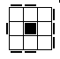 | O2a) (11,14,11,3) F R'F'R U²F R'F'R²U²R' 02b) (11,12,11,4) F R'F'R U R²B'R'B U'R' | 1/54 |
O3a) (12,12,12,4) R U B U'B'R'F R U R'U'F' 03b) (11,13,10,4) Rs B'L U²L'B'R B'R²L 03c) (12,13,12,3) F' U²F'L F L'U'L'U'L U'F | 1/27 | |
O4a) (12,12,10,5) R'F R F'U'Ls D'F D Rs 04b) (11,12,11,4) L F'L'F U²F U'R U'R'F' 04c) (11,14,11,3) R B U²B²U'R' U R B U²R' | 1/54 | |

| O5a) (11,14,11,4) L F R U²R'U²R U²R'F'L' 05b) (11,12,11,4) B L U L'U B'U²B'R B R' 05c) (13,15,13,3) B L'B'L U²L'U'B'U B L²U'L' | 1/54 |

| O6a) (12,12,10,5) Rs D'B'D Ls U B L'B'L O6b) (11,12,11,4) R B²U L'U' B'U L B'U'R' 06c) (11,14,11,3) L U²F'L'U' L U F²U²F'L' | 1/54 |

| O7a) (13,13,11,4) Rs U'B'U B U B U B'U'Ls 07b) (12,18,9,6) R² U²B F'L'B²F²R'D²R²B F' | 1/216 |

| O8a) (11,12,11,4) L F U'R U R²F'L'F R F' O8b) (11,14,11,4) R U'B²D B'U²B D'B²U R' 08c) (11,14,11,3) R'U²R²U R'U R U²B'R'B | 1/108 |
| 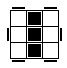 | O9a) (12,12,12,4) R B U B'U'B R'F R B'R'F' 09b) (11,12,11,4) B L F L'B²L U F'U'L'B 09c) (13,15,13,3) R'U'F U²F U'F U F'U²F'U'R | 1/108 |

| O10) (10,10,10,3) L U F U'F'U F U'F'L' | 1/54 |

| O11a) (10,10,10,4) R U B U'B L'B'L B'R' 011b) (12,13,12,3) L U F'U'F L'F²L F L'U F | 1/54 |
| 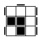 | O12a) (10,12,10,4) F R'F'R U²F²L F L'F 012b) (11,12,11,3) R B L'B L B'L'B L B²R' | 1/27 |
| 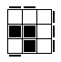 | O13a) (9,12,9,3) R F'U²F U²F R²F'R O13b) (10,12,10,4)L'B L'B'L²U²F'L F L' | 1/27 |
O14) (10,10,10,3) R B U B'U'B U B'U'R' | 1/27 | |
O15a) (7,8,7,3) R B L'B L B²R' O15b) (8,10,8,3) L'B²R B²L B'R'B | 1/27 | |
| 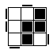 | O16a) (11,13,10,3) B F²L'F L'F'L²F L'B'F 016b) (11,12,11,4) F'L'B L'B D'B'D B'L²F | 1/27 |
| 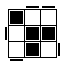 | O17a) (10,10,10,3) L'U'L B L' B'U B L B' O17b) (11,12,9,5) B U²B'U'Rs D B'D'Ls | 1/27 |
O18a) (7,8,7,3) L'B²R B R'B L 018b) (8,10,8,3) L'U'L²F'L'F²U'F' | 1/27 | |
| 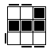 | O19) (10,10,10,3) R B'R'U'R B R'B'U B | 1/27 |

| O20a) (10,10,9,4) L F L'R U R'U'L F'L' O20b) (11,15,11,3) B'U²B²U B²R'U R B²U'B' 020c) (12,12,12,3) F'U'L'U L F L U F U'F'L' | 1/27 |
| 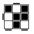 | O21a) (10,11,9,4) R L²D'B'D B L B'Ls 021b) (11,12,11,3) R U'R'U²R U B U'B'U'R' | 1/27 |

| O22a) (10,10,10,4) B U L U'F L'B'L F'L' O22b) (10,12,10,3) B L B'R B L²B L B²R' | 1/27 |
O23) (9,9,9,3) R U B'U'R'U R B R' 023b)(9,9,8,4) Rs U'B'U B L U R' | 1/27 | |

| O24a) (8,8,8,3) B L'B'L U L U'L' 025b) (9,12,9,3) L'U²L F'L F L²U²L | 1/54 |
O25a) (6,6,6,3) B U L U'L'B' 025b) (8,8,8,4) F'U'F R B U B'R' | 1/27 | |
O26) (9,12,9,3) F'U²F²R'F'R F'U²F | 1/54 | |

| O27) (6,6,6,3) R B U B'U'R' | 1/54 |
O28) (8,8,8,3) B'U'B U B L'B'L | 1/54 | |

| O29) (9,9,9,3) R B'R'U'R U B U'R' | 1/27 |

| O30a) (10,10,9,4) L U L'U'F'L'B L Fs 030b) (11,15,11,3) B U²B²U'R'U R²B R²U R 030c) (12,12,12,3) L U L'U B'U B U L'B L B' | 1/54 |
O31a) (8,8,8,4) F R U'B U B'R'F' O31b) (8,8,8,3) F U F R'F'R U'F' | 1/54 | |
| 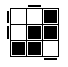 | O32a) (10,11,10,3) R B U B²U'R'U R B R' O32b) (10,14,10,4) L'U²L²F²R'F L'F²R F' | 1/27 |

| O33a) (11,12,11,2) F U²F' U'F U F'U'F U'F' 033b) (11,11,11,3) L U L' U L U R'U L'U'R 033c) (11,15,10,5) B'U²Bs D F²U F²D'L²F | 1/108 |

| O34a) (9,14,9,2) R U²R²U'R²U'R²U²R 034b) (11,11,11,3) R'U L U'R U'L'U'L U'L' | 1/54 |
| 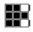 | O35a) (9,12,9,3) F²D'F U²F'D F U²F 035b) (10,11,10,3) F'U²F L U'F'U'F U L' | 1/54 |
O36) R'F'L F R F'L'F | 1/54 | |
O37) (8,8,8,3) R'F'L'F R F'L F | 1/54 | |
| 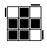 | O38a) (7,7,7,3) B'U F U'B U F' 038b) (7,8,7,2) L U²L'U'L U'L' | 1/27 |

| O39a) (11,12,7) Rs B Ls U²Rs B Ls 039b) (9,12,9,3) L F'L F²R' F R F²L² 039c) (10,10,8,4) F R'F' R L' U R U'R'L | 1/54 |
O40a) (10,10,8,4) Fs U F'U'Fs'L F L' 040b) (12,14,12,3) B' U'B'R'U' R U B²U²B'U'B | 1/108 |